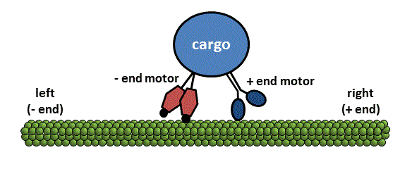

Step Length (left/right)
Amplitude de Pas (g/d)
Step Probability (left/right)
Probabilité de Pas (g/d)
Processivity Factor (left/right)
Facteur de Processivité (g/d)
ATP (fold increase, control=1)
ATP (nombre multiplication, contrôle=1)
Refresh your browser to restore default values
Rafraîchissez votre navigateur pour rétablir les valeurs des paramètres de départ
English
Francais